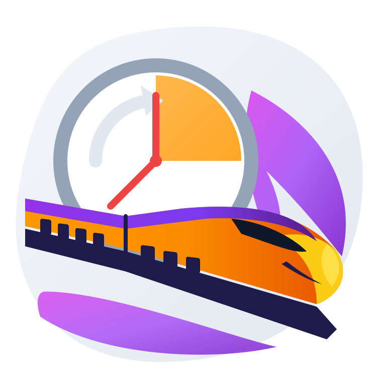

Install Metro App
Faster access & offline support
Install
✕
Map
Recent
Find Route
Setting
Telemetry
?
🛰️
GPS Status
0%
📶
Network
100%
🎯
Precision
±-- m
📡 Telemetry & GPS Guide
🟢 80%-100%: Strong Satellite Lock
🟡 40%-79%: Moderate Signal
🔴 In Tunnel: Timer Fallback Active
📵 GPS Off: Enable Device Location
🚫 Blocked: Location permission denied
0.0
km/h
Live Speedometer
Top Speed:
0.0 km/h
GPS Accuracy:
±-- m
Status:
Stationary
🔔
---
Approaching Station
🔕 Dismiss
⏱️ Snooze
🛑 Stop
Alarm
🎟️ Ticket
Share Route
✕
Start
➔
Destination
0.0 km
•
0 min
•
₹0
Select Share Option:
💬
WhatsApp
✈️
Telegram
📱
SMS
🔗
Copy Link
📋
Copy Details